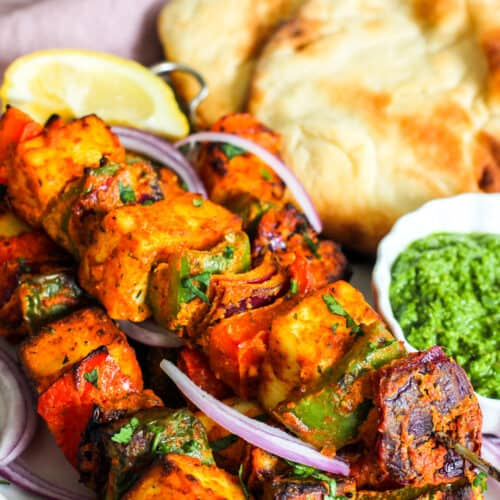

Paneer Tikka is a popular Indian appetizer made from marinated and grilled paneer cubes along with vegetables. It's a vegetarian version of the famous chicken tikka and is loved for its smoky, spicy, and tangy flavors.
Tandoori Paneer Tikka: This variation involves marinating the paneer in a mixture of yogurt, tandoori masala, and spices, and then grilling it in a tandoor for an authentic smoky flavor. Achari Paneer Tikka: In this variation, the paneer is marinated in a tangy and spicy pickle-flavored marinade before grilling. Hariyali Paneer Tikka: This variation involves marinating the paneer in a vibrant green marinade made from mint, coriander, and other herbs, giving it a fresh and herbaceous flavor.
Paneer Tikka is a versatile dish that can be served as an appetizer, snack, or even as a side dish with Indian meals. It's loved by vegetarians and non-vegetarians alike for its rich flavors and succulent texture.
In a bowl, mix thick yogurt, ginger-garlic paste, tandoori masala or paneer tikka masala, red chili powder, turmeric powder, garam masala, lemon juice, and salt to taste. Adjust the spices according to your preference.
Add paneer cubes to the marinade and coat them well. Allow the paneer to marinate for at least 30 minutes to absorb the flavors. If using vegetables, coat them with the marinade separately and let them marinate for the same duration.
Thread the marinated paneer cubes and vegetables onto skewers, alternating between paneer and vegetables.
Preheat the grill or oven to medium-high heat. Brush the grill grates with oil to prevent sticking. Place the skewers on the grill and cook for about 8-10 minutes, turning occasionally, until the paneer and vegetables are lightly charred and cooked through. Alternatively, you can also cook the paneer tikka in a preheated oven at 200°C (400°F) for about 15-20 minutes or until done.
Once cooked, remove the paneer tikka skewers from the grill or oven. Serve hot with mint chutney, sliced onions, lemon wedges, and a sprinkle of chaat masala for extra flavor.